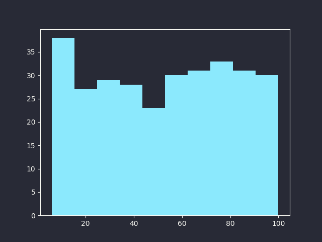
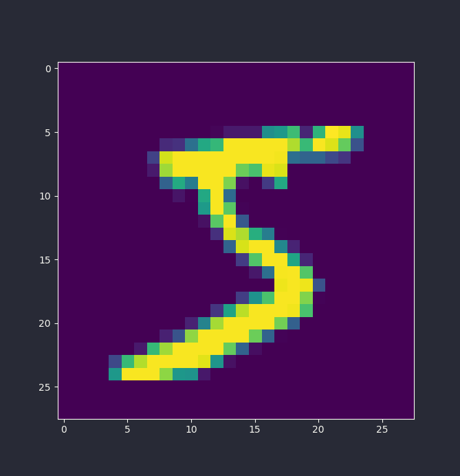

Rough Guide on Matplotlib
Rough Guide to Matplotlib
Do you have the need to create graphs? Visualize highly numerical data , or just look at beautifully generated graphs and get turned on!
Well like any other situation Python has you covered!
Matplotlib provides easy and efficient way of creating graphs.It is a python module , so you need pip to install it. Pip is python's modular structure allowing , us to share our code with others.
More information here.
pip can install any module from PyPI , python's official module location , or as cool people call it repository.
To install use pip install command.
# Installing matploblib
pip install --user matplotlib
Now that matplotlib is installed. We have to import it in Python , importing in python is easy!
import matplotlib
But we don't need to import matplotlib itself, matplotlib.pyplot provides most of the features we need. The rest of matplotlib can be used to create extremely complex graphs.
Pyplot is inspired from MATLAB . If you have used MATLAB before , it has the same API.
This guide only focuses on PyPlot API , for a more object-based approach , see matplotlib's documentation, or refer to this guide.
Important Funcs
PyPlot provides some useful functions mainly pyplot.show() and pyplot.savefig().
These provide functionality to show and save the graphs we create!.
Without these method, you can plot your graphs , but can never see them.
Plotting is when you call the particular method (More on that later!).These method configures the matplotlib backend with your graph ,
pyplot.show() simply shows the configured , graph.
When you try to configure more than one plot , both are shown in same graph.
To see already plotted graph , use pyplot.show() , but using it also clears the graph after showing it.
While using it in a REPL , keep in mind to plot the graph again , before calling pyplot.show().
pyplot.show()
To save a already plotted graph , use pyplot.savefig() , it takes name and format of image as arguments , which allows you to save the graph.
For example
# Graph already plotted!
pyplot.savefig('example-graph.png',format='png')
One thing before moving to next section!
Most people alias pyplot to plt in Python. So if you see plt anywhere, don't worry it is the same thing.
To alias pyplot to plt
import matplotlib.pyplot as plt
Basic Plotting
For plotting basic lines , plt.plot() function is enough, it takes list of x and y coordinates as arguments.
Plotting points (3,2),(5,4) and (4,1).Keep in mind plot method connects all the dots with a line.
x_coordinates = [ 3 , 5 , 4]
y_coordinates = [ 2 , 4 , 1]
# Points (3,2),(5,4),(4,1)
plt.plot(x_coordinates,y_coordinates)
plt.show()
The graph created is

Simple Scattering
Scatter plot simply shows all the coordinates/points without connecting them with a line.
Scatter plot are very useful in showing actual points , without a line seperating them. It also takes list of x and y coordinates as arguments.
Showing (2,6),(4,5),(1,8) and (3,6) on a graph is easy.
x_coordinates = [ 2 , 4 , 1 , 3 ]
y_coordinates = [ 6 , 5 , 8 , 6 ]
# Points (2,6) , (4,5) , (1,8) and (3,6)
plt.scatter(x_coordinates , y_coordinates)
plt.show()
The end result

Histograms
Histograms in matplotlib is as easy as just giving the list of values you want a histogram of.
plt.hist([ random.randint(5,100) for _ in range(300) ])

It provides a good view of how the data is distributed , over the range.
Showing Images.
One more useful function , I use most of the time , is plt.imshow() . When working with a lot of images this can show your image , with extra info/special filters etc.
It takes a 2-D matrix or 3-D matrix as input , depending on channels of image , that is how many colors are recorded , in data.A single color is represented as intensity value. It can vary from 1 to 255. No of channels/colors can vary between 1-3 colors, if only 1 channel , image is black and white. If having all 3 colors , image is a normal color image.The colors are simply RGB(Red ,Green and Blue).
For example this is an handwritten 5 , from MNIST dataset(Coming in future posts!) , which is stored in a 2-D array.
# Usage of matplotlib.pyplot.imshow()
plt.imshow(image)
plt.show()

Aesthetics.
Graphs being almost 100% visual feedback , you might need to add some bling to it. Matplotlib supports everything a graph might have.Make sure to read it's documentation afterwards.
To add label to any plot/scatter , just add label argument.Label make it easy to spot , when multiple plots are present.
You can also add label to x-axis and y-axis using methods like plt.xlabel() and plt.ylabel().
plt.xlabel('Speed')
plt.ylabel('Distance')
You can also add text to the graph , using the plt.text() method.For using this , you have to provide a coordinate and the text to plot.
This text can be customized (Color , Border etc).
You can add title to your graphs using plt.title() method.
plt.scatter(x_coordinates,y_coordinates,label='Group 1')
for x,y in zip(x_coordinates,y_coordinates):
plt.text(x,y,'Point ({x},{y})'.format(x=x,y=y))
plt.show()

To plot one graph over another , use the plot/scatter function without using plt.show() or plt.savefig() first.
plt.plot([ 3 , 5 , 7] , [ 3 , 5 , 7],label='Line y=x')
plt.scatter([ 5 , 6 ] , [ 2, 5 ] , label='Group of people')
plt.show()

To show a legend in the graph use the plt.legend() function .
plt.plot([ 3 , 5 , 7] , [ 3 , 5 , 7],label='Line y=x')
plt.scatter([ 5 , 6 ] , [ 2, 5 ] , label='Group of people')
plt.legend()
plt.show()
You can customize plotting style by , specifying parameters such as
- LineStyle: Using
linestyleparameter to customize the line-drawn. - LineWidth: Using
linewidthparameter to increase thickness of the line. - Marker: Using
markerparameter , this changes how actual points are shown in the graph.See here for all the marker codes. - Color: Using color parameter, this changes color of the line drawn, see here for all the color codes.
This graph uses linestyle of -- and linewidth of 3.5 ,marker type of + and color green.
plt.plot(x_coodinates,y_coordinates,label='Line',linestyle='--',linewidth=3.5,marker='+',color='g')
plt.show()

You can also customize matplotlib itself, using styles.
By default matplotlib's style is boring,I am using dracula style for my graphs.You can change everything from fonts to background.
More info on matplotlib's documentation.If you want to learn to use matplotlib , you have to read it.
Anyway , here's how to use a default dark-style(included in matplotlib) , for installing more themes look at matplotlib's website.
plt.style.use('dark_background')
Bon Voyage!
That's basic matplotlib for you.You should definately look at their documentation. You can also look at the Object API for matplotlib. It is a little advanced , but is highly configurable.
With the required info, you can make basic graphs , with text. I personally use matplotlib to create graphs for my Physic's classes and ofcourse Data Visualization in ML.